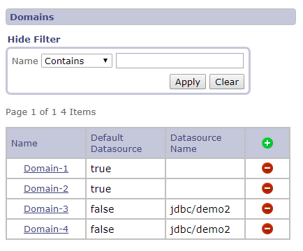
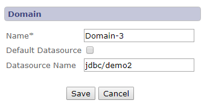
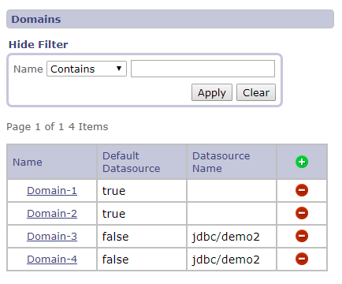
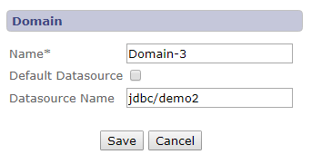
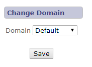
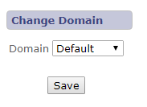
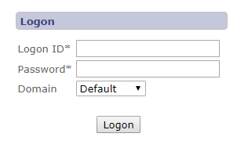
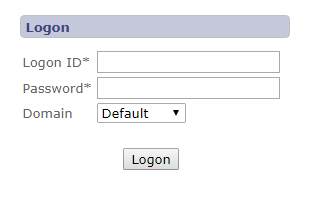
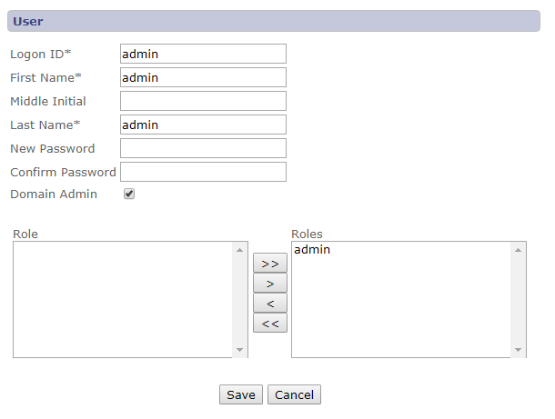
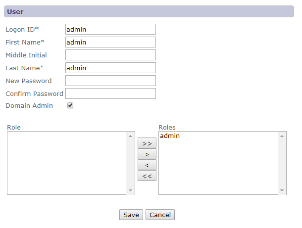

Multitenancy
Multitenancy is inherently supported in the JDistil framework and allows tenants to be segregated within a single database,
across multiple databases or using a combination of both strategies. The segregation of tenant data is accomplished using
tenant domains that can only be managed by a domain administrator. Each domain is defined using a unique tenant name and a
target data source name. The target data source can reference the default data source or a data source name referencing a
separate database based on the same underlying database schema. Once the domains are defined, domain administrators can switch
to any domain and create initial administrative users within that domain. Those domain specific administrative users can then
login to their assigned domain and manage users within their domain. The following sections document the domain management interfaces.
Domain Management Interface
This view allows a domain administrator to view, add, edit and delete tenant domains.

This view allows a domain administrator to add or edit a tenant domain. Definitions of each field are listed below the screen shot.


This view allows a domain administrator to add or edit a tenant domain. Definitions of each field are listed below the screen shot.

| Field | Description |
|---|---|
| Name | Unique tenant domain name. |
| Default Datasource | Indicates the tenant domain data is persisted in the default datasource. |
| Datasource Name | Specifies the datasource name used to persist the tenant domain data. |
| Save | Saves changes to the tenant domain and returns to the tenant domains page. |
| Cancel | Ignores changes to the tenant domain and returns to the tenant domains page. |
Domain Change Interface
This view allows a domain administrator to change to a different tenant domain.


User Interface Impacts
The logon interface includes the selection of a tenant domain when multitenancy is enabled in the application.


User Management Interface Impacts
The user interface includes an additional field allowing a user to be defined as a domain administrator.
This field is only available when the current user is a domain administrator working in the default domain.

